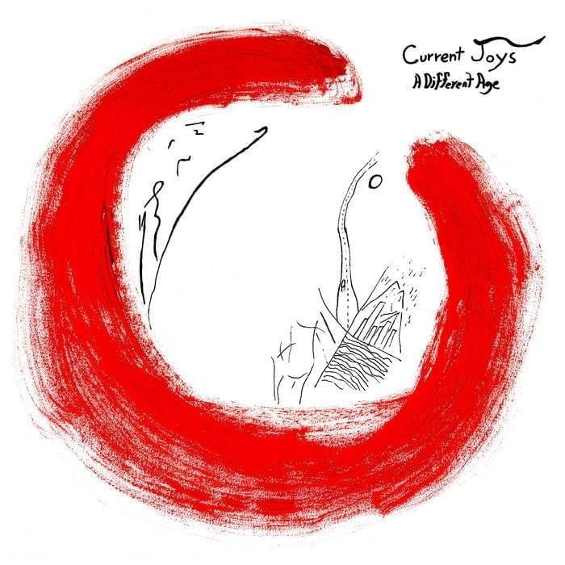

Michael Campbell's Labs for 377
Album Names
- Current Joys - A different age
- Ryuichi Sakamoto - 1996
- Kendrick Lamar - Damn
- Tyler, the Creator - IGOR
- j^p^n - convert
Image carousel



Mochi images in jpg, gif, png, and svg